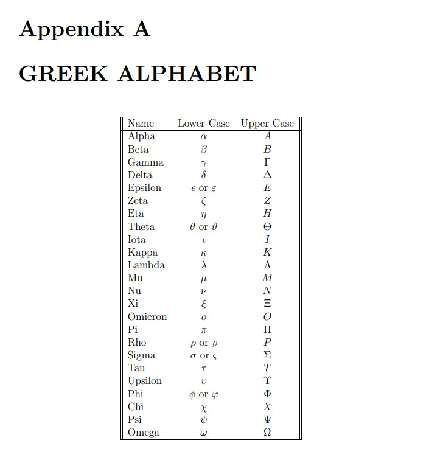

12 부록
12.1 그리스 문자

12.2 약어
- BF: 베이즈 인자(Bayes Factor). \(H\)가 하나의 가설이고 \(T\)가 충분통계량이면,
\[ BF = \frac{\text{Posterior odds of } H}{\text{Prior odds of } H} = \frac{P(H \mid T=t)/P(H^c \mid T=t)}{P(H)/P(H^c)} = \frac{f_{T \mid H}(t \mid H)}{f_{T \mid H^c}(t \mid H^c)} \]
- CDF 또는 cdf: 누적분포함수(Cumulative Distribution Function). \(X\)가 확률변수이면,
\[ F_X(x) = P(X \le x) \]
는 \(X\)의 누적분포함수이다.
- CLT: 중심극한정리(Central Limit Theorem). \(X_1, X_2, \ldots, X_n\)이 평균 \(\mu_X\), 분산 \(\sigma_X^2\)인 모집단에서 추출한 크기 \(n\)의 확률표본이면,
\[ Z_n = \frac{\bar X - \mu_X}{\sigma_X/\sqrt{n}} \]
의 분포는 \(n \rightarrow \infty\)일 때 \(N(0,1)\)로 수렴한다.
- CRLB: 크래머-라오 하한(Cramer-Rao Lower Bound). CRLB는 \(g(\theta)\)의 불편추정량이 가질 수 있는 분산의 하한이다. 그 하한은 다음과 같다.
\[ CRLB = \frac{ \left[ \frac{\partial g(\theta)}{\partial \theta} \right]^2 }{I_\theta}, \]
여기서 \(I_\theta\)는 피셔 정보(Fisher’s information)이다.
- LR: 가능도비(Likelihood Ratio). 단순 귀무가설과 단순 대립가설을 검정할 때 가능도비는 다음과 같다.
\[ \lambda = \frac{f_0(x)}{f_1(x)}. \]
- 복합 귀무가설과 복합 대립가설을 검정할 때 가능도비는 다음과 같다.
\[ \lambda = \frac{ \sup_{\theta \in \Theta_0} f(x \mid \theta) }{ \sup_{\theta \in \Theta_a} f(x \mid \theta) }, \]
여기서 \(\Theta_0\)와 \(\Theta_a\)는 각각 \(H_0\)와 \(H_a\)하에서의 모수공간이다.
LRT: 가능도비 검정(Likelihood Ratio Test). \(H_0\) 대 \(H_a\)의 가능도비 검정은 가능도비가 작은 값일 때 \(H_0\)를 기각하는 검정이다. 임계값은 검정의 크기가 \(\alpha\)가 되도록 선택한다.
MGF 또는 mgf: 적률생성함수(Moment Generating Function). \(X\)가 확률변수이면,
\[ \psi_X(t) = E(e^{tX}) \]
는 \(X\)의 적률생성함수이다.
MLE: 최대가능도추정량(Maximum Likelihood Estimator). \(X_1, X_2, \ldots, X_n\)이 \(f_X(x \mid \theta)\)에서 추출한 확률표본이고, \(\theta\)가 \(k \times 1\) 모수벡터라고 하자. \(\theta\)의 최대가능도추정량은 가능도함수를 최대화하면서 모수공간 내부 또는 모수공간의 경계에 있는 임의의 값 \(\hat\theta\)이다.
MSE: 평균제곱오차(Mean Square Error). \(T\)가 모수 \(\theta\)의 추정량이면,
\[ MSE_T(\theta) = E(T-\theta)^2 = \sigma_T^2 + bias^2, \]
여기서 \(bias = E(T-\theta)\)이다.
- PDF 또는 pdf: 확률밀도함수(Probability Density Function). \(X\)가 연속형 확률변수이면,
\[ \frac{d}{dx}F_X(x)=f_X(x) \]
는 \(X\)의 확률밀도함수이다.
- PF 또는 pf: 확률함수(Probability Function). \(X\)가 이산형 확률변수이면,
\[ P(X=x)=f_X(x) \]
는 \(X\)의 확률함수이다. pf와 pmf라는 용어는 서로 바꾸어 사용할 수 있다.
- PGF 또는 pgf: 확률생성함수(Probability Generating Function). \(X\)가 확률변수이면,
\[ \eta_X(t)=E(t^X) \]
는 \(X\)의 확률생성함수이다.
pgf는 이산형 확률변수에서 가장 유용하다.
PMF 또는 pmf: 확률질량함수(Probability Mass Function). \(X\)가 이산형 확률변수이면,
\[ P(X=x)=f_X(x) \]
는 \(X\)의 확률질량함수이다. pmf와 pf라는 용어는 서로 바꾸어 사용할 수 있다.
RV 또는 rv: 확률변수(Random Variable).
UMP 검정: 균일최강력 검정(Uniformly Most Powerful Test). \(H_0\) 대 \(H_a\)에 대한 UMP 검정은 \(H_0\)와 \(H_a\)하에서 모수값이 무엇이든 가장 강력한 검정이다.
12.3 연습 시험
12.3.1 급수와 극한
\[ \begin{aligned} \sum_{i=0}^{n} r^i &= \begin{cases} \dfrac{1-r^{n+1}}{1-r}, & r \ne 1,\\ n+1, & r=1, \end{cases} \\[6pt] \sum_{i=0}^{\infty} r^i &= \begin{cases} \dfrac{1}{1-r}, & |r|<1,\\ \infty, & r>1,\\ \text{정의되지 않음}, & r<-1, \end{cases} \\[6pt] (a+b)^n &= \sum_{i=0}^{n} \binom{n}{i} a^i b^{n-i}, \\[6pt] \ln(1+\varepsilon) &= -\sum_{i=1}^{\infty} \frac{(-\varepsilon)^i}{i}, \qquad |\varepsilon|<1, \\[6pt] \ln(1+\varepsilon) &= \varepsilon + o(\varepsilon), \qquad |\varepsilon|<1, \\[6pt] \lim_{n\rightarrow\infty} \left(1+\frac{a}{n}+o(n^{-1})\right)^n &= e^a, \\[6pt] e^a &= \sum_{i=0}^{\infty}\frac{a^i}{i!}. \end{aligned} \]
12.3.2 선택된 합과 기댓값의 분포
\[ \begin{aligned} X_i \overset{iid}{\sim} Bern(\theta) &\Rightarrow E(X_i)=\theta,\quad Var(X_i)=\theta(1-\theta),\quad \sum_{i=1}^{n}X_i \sim Bin(n,\theta), \\ X_i \overset{iid}{\sim} Geom(\theta) &\Rightarrow E(X_i)=\frac{1}{\theta},\quad Var(X_i)=\frac{1-\theta}{\theta^2},\quad \sum_{i=1}^{n}X_i \sim NegBin(n,\theta), \\ X_i \overset{iid}{\sim} Poi(\lambda) &\Rightarrow E(X_i)=\lambda,\quad Var(X_i)=\lambda,\quad \sum_{i=1}^{n}X_i \sim Poi(n\lambda), \\ X_i \overset{iid}{\sim} Expon(\lambda) &\Rightarrow E(X_i)=\frac{1}{\lambda},\quad Var(X_i)=\frac{1}{\lambda^2},\quad \sum_{i=1}^{n}X_i \sim Gamma(n,\lambda), \\ X_i \overset{iid}{\sim} NegBin(k,\theta) &\Rightarrow E(X_i)=\frac{k}{\theta},\quad Var(X_i)=\frac{k(1-\theta)}{\theta^2},\quad \sum_{i=1}^{n}X_i \sim NegBin(nk,\theta). \end{aligned} \]
- \(X \sim Gam(\alpha,\lambda)\)라고 하자.
\[ f_X(x) = \frac{x^{\alpha-1}\lambda^\alpha e^{-\lambda x}}{\Gamma(\alpha)} I_{(0,\infty)}(x), \]
여기서 \(\alpha>0\)이고 \(\lambda>0\)이다.
- \(X\)의 mgf가 다음과 같음을 확인하라.
\[ \psi_X(t) = \left(\frac{\lambda}{\lambda-t}\right)^\alpha. \]
- mgf는 어떤 \(t\) 값들에 대해 존재하는가?
- \(W_1,\ldots,W_n\)이 \(Exp(\lambda)\)에서 추출한 크기 \(n\)의 확률표본이라고 하자.
\[ f_W(w)=\lambda e^{-\lambda w}I_{(0,\infty)}(w), \]
여기서 \(\lambda>0\)이다. mgf를 사용하여 \(Y=\sum_{i=1}^{n}W_i\)의 분포를 구하라.
힌트: 지수분포는 감마분포의 특수한 경우이므로, \(W\)의 mgf는 1번 문제에서 얻을 수 있다.
- 확률변수 \(X\)의 mgf가 다음과 같다고 하자.
\[ \psi_X(t)=\frac{1}{1-t}. \]
\(X\)의 pdf를 제시하라.
\(E(X^r)\)에 대한 식을 유도하라. 단, \(r=0,1,2,\ldots\)이다.
- \(X \sim N(\mu_X,\sigma_X^2)\), \(Y \sim N(\mu_Y,\sigma_Y^2)\)이고 \(X \perp Y\)라고 하자. \(X\)의 mgf는 다음과 같다.
\[ \psi_X(t) = \exp\left\{ t\mu_X+\frac{t^2\sigma_X^2}{2} \right\}. \]
\(E(X)=\mu_X\)이고 \(Var(X)=\sigma_X^2\)임을 확인하라.
\(X-Y \sim N(\mu_X-\mu_Y,\sigma_X^2+\sigma_Y^2)\)임을 증명하라.
- \(X \sim LogN(\mu,\sigma^2)\)라고 하자. 다음 확률을 계산하라.
\[ Pr(e^\mu \le X \le e^{\mu+\sigma}) \]
- \(i=1,\ldots,n\)에 대해 \(W_i\), 그리고 \(i=1,\ldots,m\)에 대해 \(X_i\)가 각각 \(N(0,\sigma^2)\) 분포를 따르는 iid 확률변수라고 하자.
- 다음 확률변수의 분포를 제시하라.
\[ U=\sum_{i=1}^{n}\left(\frac{W_i}{\sigma}\right)^2 \]
답을 정당화하라. 힌트: 먼저 \(W_i/\sigma\)의 분포를 제시하라.
- 다음 확률변수의 분포를 제시하라.
\[ V= \left(\frac{m}{n}\right) \left( \frac{\sum_{i=1}^{n}W_i^2}{\sum_{i=1}^{m}X_i^2} \right) \]
답을 정당화하라.
- \(X_i\)가 평균 \(\mu\), 분산 \(\sigma^2\)를 갖는 무한 모집단에서 추출한 크기 \(n\)의 확률표본이라고 하자. \(\bar X\)를 표본평균이라고 하자.
\(E(\bar X)=\mu\)임을 확인하라.
\(Var(\bar X)=\sigma^2/n\)임을 확인하라.
\(S^2\)를 표본분산이라고 하자.
\[ S^2 = \frac{1}{n-1}\sum_{i=1}^{n}(X_i-\bar X)^2 = \frac{1}{n-1} \left[ \sum_{i=1}^{n}X_i^2-n\bar X^2 \right]. \]
\(E(S^2)=\sigma^2\)임을 확인하라.
12.3.3 시험 2
- \(X_1,X_2,\ldots,X_n\)이 \(f_X(x \mid \alpha,\beta)\)에서 추출한 크기 \(n\)의 확률표본이라고 하자. 여기서
\[ f_X(x \mid \alpha,\beta) = \frac{\alpha\beta^\alpha}{x^{\alpha+1}} I_{(\beta,\infty)}(x), \]
이고 \(\alpha>0\), \(\beta>0\)은 미지의 모수이다. 이 분포를 \(Pareto(\alpha,\beta)\) 분포라고 한다.
2차원 충분통계량을 구하라.
\(X_{(1)}\)의 pdf가 \(Pareto(n\alpha,\beta)\)임을 확인하라. 즉,
\[ f_{X_{(1)}}(x \mid \alpha,\beta) = \frac{n\alpha\beta^{n\alpha}}{x^{n\alpha+1}} I_{(\beta,\infty)}(x). \]
- 충분통계량의 결합 표본분포는 시뮬레이션으로 연구할 수 있다. \(U_1,U_2,\ldots,U_n\)이 \(Unif(0,1)\)에서 추출한 확률표본이라고 하자. \(U_i\)를 \(Pareto(\alpha,\beta)\) 분포를 갖는 확률변수로 어떻게 변환할 수 있는지 보여라.
- \(X \sim Gamma(\alpha,\lambda)\)이고 \(\lambda\)는 알려져 있다고 하자.
\(X\)의 분포가 지수족에 속함을 확인하라.
\(X_1,X_2,\ldots,X_n\)이 \(Gamma(\alpha,\lambda)\) 분포에서 추출한 확률표본이고 \(\lambda\)가 알려져 있다고 하자. (a)의 결과를 사용하여 충분통계량을 구하라.
(b)에 해당하는 가능도함수를 제시하라.
- \(X_1,X_2,\ldots,X_n\)이 다음 분포에서 추출한 확률표본이라고 하자.
\[ f_{X \mid \theta}(x \mid \theta) = \theta(1-\theta)^{x-1}I_{\{1,2,\ldots\}}(x). \]
\(T=\sum_{i=1}^{n}X_i\)가 충분통계량임을 확인하라.
조건부분포 \(P(X=x \mid T=t)\)가 \(\theta\)에 의존하지 않음을 확인하라.
연구자의 \(\theta\)에 대한 사전 믿음이 \(\theta \sim Beta(\alpha,\beta)\)로 요약된다고 하자. \(\theta\)의 사후분포를 구하고, \(T=t\)가 주어졌을 때 \(\theta\)의 조건부 기댓값을 구하라.
\(Z_1,Z_2,\ldots,Z_k\)를 미래의 \(Geom(\theta)\) 확률변수열이라고 하고, \(Y=\sum_{i=1}^{k}Z_i\)라고 하자. \(T\)가 주어졌을 때 \(Y\)의 사후예측분포를 구하라. 즉, \(f_{Y \mid T}(y \mid t)\)를 구하라.
- \(X_1,X_2,\ldots,X_n\)이 평균 \(\mu\), 분산 \(\sigma^2\)를 갖는 분포에서 추출한 크기 \(n\)의 확률표본이라고 하자. \(Z_n\)을 다음과 같이 정의한다.
\[ Z_n= \frac{\bar X-\mu}{\sigma/\sqrt{n}}. \]
중심극한정리를 서술하라.
다음이 성립함을 확인하라.
\[ Z_n= \sum_{i=1}^{n}U_i, \qquad U_i=\frac{Z_i^*}{\sqrt{n}}, \qquad Z_i^*=\frac{X_i-\mu}{\sigma}. \]
- \(X\)가 적률생성함수를 갖는다고 가정하라. 다음을 확인하라.
\[ \psi_{Z_n}(t)=\left[\psi_{U_i}(t)\right]^n. \]
\(U_i\)의 평균과 분산이 각각 \(0\)과 \(n^{-1}\)임을 확인하라.
중심극한정리의 증명을 완성하라.
12.3.4 시험 3
- \(X\)를 확률변수라고 하자. \(h(X)\)는 기댓값이 존재하는 비음수 함수이고, \(k\)는 임의의 양수라고 하자. 체비셰프 부등식은 다음을 말한다.
\[ P[h(X)\ge k] \le \frac{E[h(X)]}{k} \]
또는 동치로,
\[ P[h(X)<k] \ge 1-\frac{E[h(X)]}{k}. \]
추정량 \(T_n\)이 모수 \(\theta\)에 대해 일치추정량이라는 것이 무엇을 의미하는지 정의하라.
체비셰프 부등식을 사용하여 다음 명제가 성립함을 확인하라.
\[ \lim_{n\rightarrow\infty} MSE_{T_n}(\theta)=0 \Longrightarrow T_n \xrightarrow{prob} \theta. \]
- \(X_1,X_2,\ldots,X_n\)이 \(Bern(\theta)\)에서 추출한 확률표본이라고 하자.
가능도함수를 제시하라.
충분통계량을 구하라.
점수함수가 다음과 같음을 확인하라.
\[ S(\theta \mid X) = \frac{\sum_{i=1}^{n}X_i-n\theta}{\theta(1-\theta)}. \]
\(\theta\)의 MLE를 유도하라.
\(\frac{1}{\theta}\)의 MLE를 유도하라.
피셔 정보를 유도하라.
\(\theta\)의 MLE가 \(\theta\)의 최소분산 불편추정량이라는 주장을 확인하거나 반박하라.
- \(i=1,\ldots,n\)에 대해 \(X_i \overset{iid}{\sim} Expon(\lambda)\)라고 하자. \(Y=\sum_{i=1}^{n}X_i\)가 충분통계량이고 \(Y \sim Gamma(n,\lambda)\)임을 보일 수 있다.
\(Q=2\lambda\sum_{i=1}^{n}X_i\)의 적률생성함수를 유도하고, \(Q\)가 피벗량임을 확인하라. \(Q\)의 적률생성함수를 사용하여 그 분포를 결정하라.
\(Q\)를 사용하여 \(\lambda\)에 대한 \(100(1-\alpha)\%\) 신뢰구간을 구하라.
- \(X_1,X_2,\ldots,X_n\)이 \(f_X(x \mid \theta)\)에서 추출한 확률표본이라고 하자. 여기서
\[ f_X(x \mid \theta) = \theta x^{\theta-1} I_{(0,1)}(x), \qquad \theta>0. \]
\(X\)의 분포가 지수족에 속한다는 주장을 확인하거나 반박하라.
\(H_0:\theta=\theta_0\) 대 \(H_a:\theta=\theta_a\)의 가장 강력한 검정을 구하라. 여기서 \(\theta_a>\theta_0\)이다.
\(H_0:\theta=\theta_0\) 대 \(H_a:\theta>\theta_0\)의 균일최강력 검정을 구하라.
연구자의 \(\theta\)에 대한 사전 믿음이 \(\theta \sim Gamma(\alpha,\lambda)\)로 요약된다고 하자. \(\theta\)의 사후분포를 구하라. 힌트: \(x_i\)를 \(x_i=e^{\ln(x_i)}\)로 쓰라.
제곱오차 손실함수에 기반한 \(\theta\)의 베이즈 추정량을 구하라.